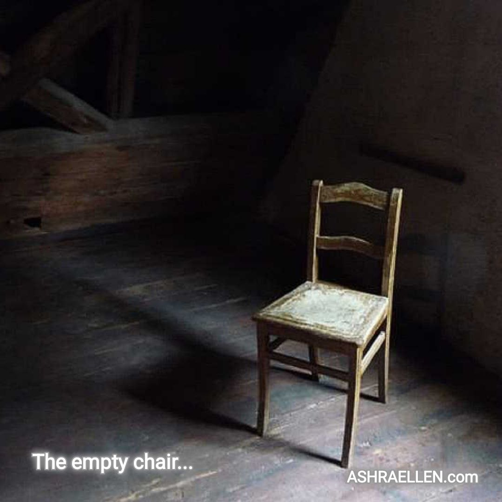
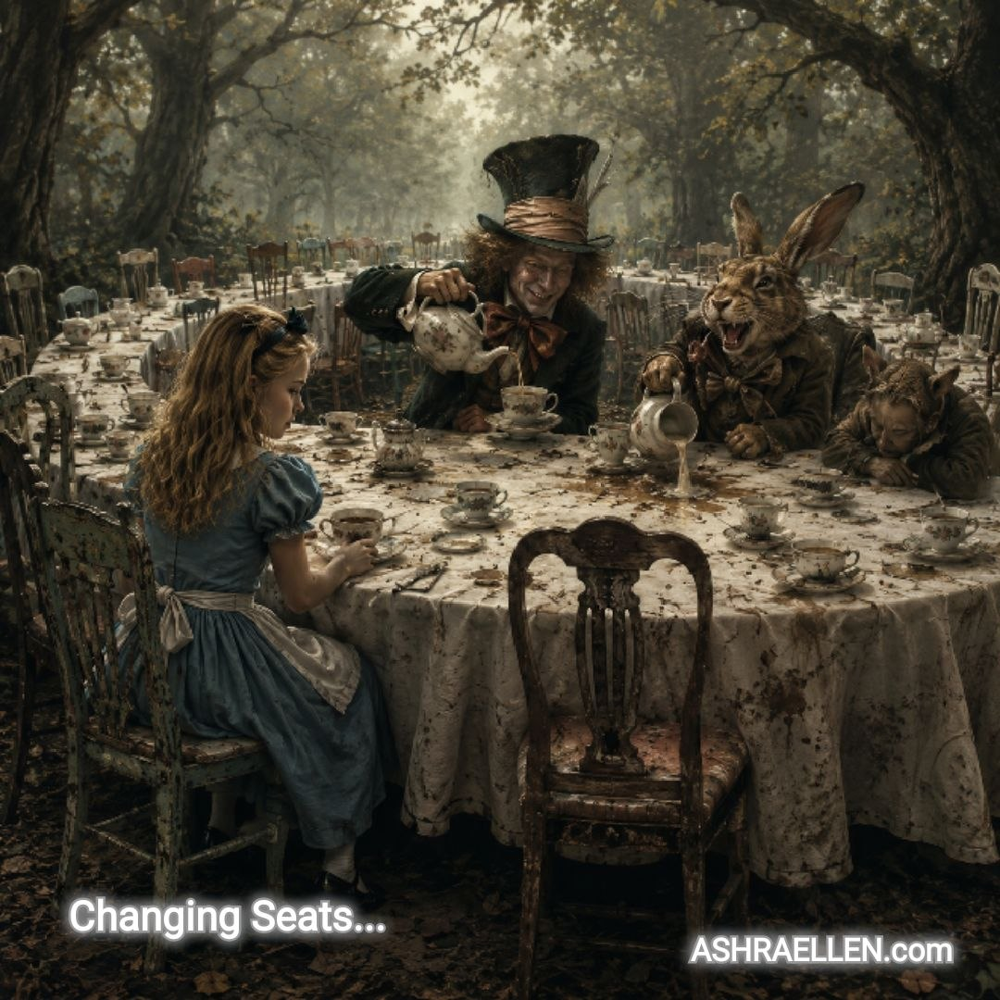

Myśli przewodnie
ŁUK 0002
Drugi łuk myśli przewodnich
Pamięć, obserwacja, przebudzenie, brudna filiżanka, miłosierdzie straty i granica literatury duchowej.
Ten łuk zbiera drugą szóstkę myśli przewodnich publicznego pola Ashraellen. Pamięć, obserwacja i przebudzenie przechodzą tu przez konkretne obrazy: puste krzesło, niebezpieczeństwo uogólnienia, brudną filiżankę, stratę, niespełnione marzenie i moment, w którym trzeba zamknąć książkę.

Myśl przewodnia 0007
Puste krzesło
Niektórzy ludzie nie odchodzą całkowicie. Po prostu przestają siedzieć obok.
Otwórz myśl →
Myśl przewodnia 0008
Uogólnienie zamiast obserwacji
Uogólnienie staje się niebezpieczne tam, gdzie zastępuje obserwację.
Otwórz myśl →
Myśl przewodnia 0009
Gdzie przestałeś być żywy
Czasem przebudzić się znaczy po raz pierwszy zobaczyć, gdzie przestałeś być żywy.
Otwórz myśl →
Myśl przewodnia 0010
Brudna filiżanka
Bieg w kółko nie czyści filiżanki. Zmienia tylko biegnącego.
Otwórz myśl →
Myśl przewodnia 0011
Nie żałuj
Czasem miłosierdzie wygląda jak strata. Czasem ratunek przychodzi pod postacią niespełnionego marzenia.
Otwórz myśl →
Myśl przewodnia 0012
Kiedy zamknąć książkę
W pewnym momencie droga toczy się już nie na stronie. Toczy się w ciszy.
Otwórz myśl → — znak obecności
— znak obecności